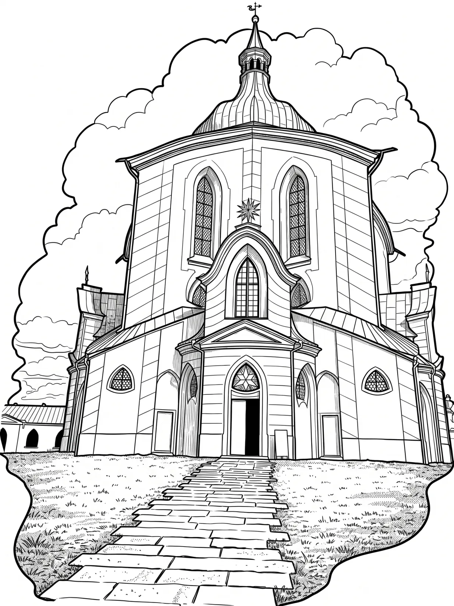

Zelená Hora
Vysočina kraj · 580 m n. m.

historická památka · #095
Poutní kostel Svatého Jana Nepomuckého na Zelené hoře ve městě Žďár nad Sázavou patří mezi nejvýznamnější stavby barokní gotiky architekta Jana Blažeje Santiniho-Aichela. Tento vrcholný Santiniho výtvor byl roku 1994 zařazen na Seznam světových kulturních a přírodních památek UNESCO.